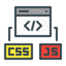

Recursos e Habilidades

HTML, CSS e JavaScript
A tríade do front-end
Git e GitHub
Porque ninguém merece perder código
Back-end e APIs
Noções sólidas de desenvolvimento servidor
Redes, Suporte e Infraestrutura
Experiência prática com infraestrutura
Aprendizado Contínuo
Vontade de aprender novas tecnologias o tempo todo
Ferramentas Modernas
VS Code, Chrome DevTools e Figma